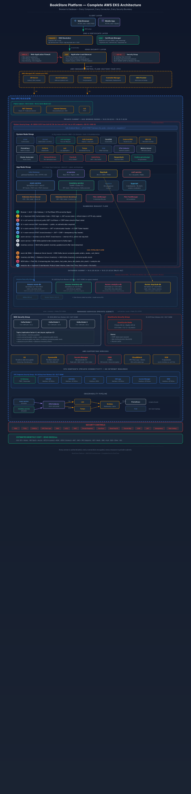

Cost-optimized, production-grade AWS EKS deployment for the BookStore Platform. Every dollar justified, every attack surface minimized.
This guide deploys the entire BookStore Platform into a single Availability Zone on AWS EKS. The architecture prioritizes cost efficiency while maintaining production-grade security controls. Every service, database, and networking component is placed within one AZ, eliminating cross-AZ data transfer charges and reducing redundant infrastructure.

A multi-AZ deployment provides 99.99% availability but costs 2-3x more. Single-AZ targets 99.5% uptime, which is acceptable for dev/staging, startups with limited budget, learning environments, and non-critical production workloads.
| Attribute | Single-AZ | Multi-AZ |
|---|---|---|
| Target SLA | 99.5% | 99.99% |
| Monthly Cost | $540-600 | $1,200+ |
| NAT Gateways | 1 | 3 |
| Aurora Replicas | 0 (writer only) | 1-2 per cluster |
| Redis Replicas | 0 (single node) | 1-2 |
| AZ Failure Risk | Full outage | Automatic failover |
| Cross-AZ Data | $0 | $10-50/mo |
| Security Controls | Identical | Identical |
Never use root credentials. Create a dedicated IAM user with programmatic access and fine-grained policies. Each policy maps to one AWS service boundary.
# Create IAM user (no console access)
aws iam create-user --user-name bookstore-deployer
aws iam create-access-key --user-name bookstore-deployer
# Attach 7 fine-grained managed policies
aws iam attach-user-policy --user-name bookstore-deployer \
--policy-arn arn:aws:iam::policy/AmazonEKSClusterPolicy
aws iam attach-user-policy --user-name bookstore-deployer \
--policy-arn arn:aws:iam::policy/AmazonVPCFullAccess
aws iam attach-user-policy --user-name bookstore-deployer \
--policy-arn arn:aws:iam::policy/AmazonRDSFullAccess
aws iam attach-user-policy --user-name bookstore-deployer \
--policy-arn arn:aws:iam::policy/AmazonMSKFullAccess
aws iam attach-user-policy --user-name bookstore-deployer \
--policy-arn arn:aws:iam::policy/AmazonElastiCacheFullAccess
aws iam attach-user-policy --user-name bookstore-deployer \
--policy-arn arn:aws:iam::policy/AmazonEC2ContainerRegistryFullAccess
aws iam attach-user-policy --user-name bookstore-deployer \
--policy-arn arn:aws:iam::policy/AmazonS3FullAccess# Configure with the new user's credentials
aws configure --profile bookstore
# AWS Access Key ID: <from step 1>
# AWS Secret Access Key: <from step 1>
# Default region: us-east-1
# Default output: json
export AWS_PROFILE=bookstore
export AWS_REGION=us-east-1For tighter control, create a single custom policy instead of attaching 7 managed policies. This restricts resource creation to your specific VPC and tags.
# terraform/iam-deployer-policy.json
{
"Version": "2012-10-17",
"Statement": [
{
"Sid": "EKSManagement",
"Effect": "Allow",
"Action": [
"eks:CreateCluster", "eks:DeleteCluster",
"eks:DescribeCluster", "eks:UpdateClusterConfig",
"eks:CreateNodegroup", "eks:DeleteNodegroup",
"eks:CreateAddon", "eks:TagResource"
],
"Resource": "arn:aws:eks:us-east-1:*:cluster/bookstore-*"
},
{
"Sid": "NetworkManagement",
"Effect": "Allow",
"Action": ["ec2:*Vpc*", "ec2:*Subnet*", "ec2:*SecurityGroup*",
"ec2:*NatGateway*", "ec2:*InternetGateway*",
"ec2:*RouteTable*", "ec2:*NetworkAcl*",
"ec2:*FlowLog*", "ec2:*VpcEndpoint*",
"ec2:AllocateAddress", "ec2:ReleaseAddress"],
"Resource": "*",
"Condition": {
"StringEquals": { "aws:RequestedRegion": "us-east-1" }
}
}
]
}Terraform state contains every resource ID, password reference, and infrastructure detail. Storing it locally is a security and collaboration risk. S3 provides encryption at rest, versioning for rollback, and DynamoDB prevents concurrent modifications that can corrupt state.
# terraform/backend.tf — Bootstrap (run once)
resource "aws_s3_bucket" "terraform_state" {
bucket = "bookstore-tf-state-${data.aws_caller_identity.current.account_id}"
tags = { Project = "bookstore", ManagedBy = "terraform" }
}
resource "aws_s3_bucket_versioning" "state" {
bucket = aws_s3_bucket.terraform_state.id
versioning_configuration { status = "Enabled" }
}
resource "aws_s3_bucket_server_side_encryption_configuration" "state" {
bucket = aws_s3_bucket.terraform_state.id
rule {
apply_server_side_encryption_by_default {
sse_algorithm = "aws:kms" # KMS > AES-256
}
bucket_key_enabled = true # reduces KMS costs
}
}
resource "aws_s3_bucket_public_access_block" "state" {
bucket = aws_s3_bucket.terraform_state.id
block_public_acls = true
block_public_policy = true
ignore_public_acls = true
restrict_public_buckets = true
}
# Deny any non-HTTPS access
resource "aws_s3_bucket_policy" "enforce_tls" {
bucket = aws_s3_bucket.terraform_state.id
policy = jsonencode({
Version = "2012-10-17"
Statement = [{
Sid = "DenyInsecureTransport"
Effect = "Deny"
Principal = "*"
Action = "s3:*"
Resource = [
aws_s3_bucket.terraform_state.arn,
"${aws_s3_bucket.terraform_state.arn}/*"
]
Condition = {
Bool = { "aws:SecureTransport" = "false" }
}
}]
})
}
resource "aws_dynamodb_table" "terraform_locks" {
name = "bookstore-tf-locks"
billing_mode = "PAY_PER_REQUEST" # on-demand = $0 when idle
hash_key = "LockID"
attribute {
name = "LockID"
type = "S"
}
tags = { Project = "bookstore", ManagedBy = "terraform" }
}# terraform/main.tf
terraform {
backend "s3" {
bucket = "bookstore-tf-state-123456789012"
key = "single-az/terraform.tfstate"
region = "us-east-1"
dynamodb_table = "bookstore-tf-locks"
encrypt = true
}
}Three subnets in one AZ provide the same logical isolation as a multi-AZ setup. The public subnet hosts internet-facing resources (ALB, NAT Gateway). The private subnet hosts EKS worker nodes with no direct internet access. The database subnet has no default route at all -- it is isolated from the internet entirely, with traffic only from the private subnet.
Using a single NAT Gateway saves $90/month compared to the recommended 3-AZ pattern (one per AZ). The trade-off: if the NAT Gateway or its AZ fails, outbound internet access is lost. For a single-AZ deployment this is acceptable since the entire stack is in that AZ anyway.
# terraform/vpc.tf
module "vpc" {
source = "terraform-aws-modules/vpc/aws"
version = "~> 5.0"
name = "bookstore-vpc"
cidr = "10.0.0.0/16"
# Single AZ — only one of each subnet tier
azs = ["us-east-1a"]
public_subnets = ["10.0.1.0/24"]
private_subnets = ["10.0.10.0/24"]
database_subnets = ["10.0.100.0/24"]
# 1 NAT Gateway total (not 1 per AZ)
enable_nat_gateway = true
single_nat_gateway = true
one_nat_gateway_per_az = false
# DNS settings required for VPC endpoints
enable_dns_hostnames = true
enable_dns_support = true
# Database subnet: no default route to internet
create_database_subnet_route_table = true
# Tags required by EKS auto-discovery
public_subnet_tags = {
"kubernetes.io/role/elb" = "1"
}
private_subnet_tags = {
"kubernetes.io/role/internal-elb" = "1"
}
tags = {
Project = "bookstore"
Environment = "single-az"
ManagedBy = "terraform"
}
}private_subnets = ["10.0.10.0/24", "10.0.11.0/24"] with azs = ["us-east-1a", "us-east-1b"]. All node groups are pinned to us-east-1a via subnet_ids.
# Updated for EKS 2-AZ requirement (control plane only)
azs = ["us-east-1a", "us-east-1b"]
public_subnets = ["10.0.1.0/24", "10.0.2.0/24"]
private_subnets = ["10.0.10.0/24", "10.0.11.0/24"]
database_subnets = ["10.0.100.0/24", "10.0.101.0/24"]
# Node groups target only us-east-1a subnetsSecurity Groups are stateful firewalls applied at the ENI level. Every resource gets a dedicated SG with least-privilege rules. No SG uses 0.0.0.0/0 for ingress, and egress is restricted to only the services each component needs.
# terraform/security-groups.tf — ALB SG
resource "aws_security_group" "alb" {
name_prefix = "bookstore-alb-"
vpc_id = module.vpc.vpc_id
description = "ALB: HTTPS from internet, egress to workers only"
tags = { Name = "bookstore-alb-sg" }
}
# Ingress: HTTPS from anywhere
resource "aws_vpc_security_group_ingress_rule" "alb_https" {
security_group_id = aws_security_group.alb.id
cidr_ipv4 = "0.0.0.0/0"
ip_protocol = "tcp"
from_port = 443
to_port = 443
}
# Ingress: HTTP (redirect to HTTPS)
resource "aws_vpc_security_group_ingress_rule" "alb_http" {
security_group_id = aws_security_group.alb.id
cidr_ipv4 = "0.0.0.0/0"
ip_protocol = "tcp"
from_port = 80
to_port = 80
}
# Egress: ONLY to Worker SG on NodePort range
resource "aws_vpc_security_group_egress_rule" "alb_to_workers" {
security_group_id = aws_security_group.alb.id
referenced_security_group_id = aws_security_group.workers.id
ip_protocol = "tcp"
from_port = 30000
to_port = 32767
}# EKS Cluster SG (auto-created by EKS module)
# Additional rule: Workers → CP on 443 (API server)
resource "aws_vpc_security_group_ingress_rule" "cluster_from_workers" {
security_group_id = module.eks.cluster_security_group_id
referenced_security_group_id = aws_security_group.workers.id
ip_protocol = "tcp"
from_port = 443
to_port = 443
}
# CP → Workers on 10250 (kubelet) + 1025-65535 (pods)
resource "aws_vpc_security_group_ingress_rule" "workers_from_cluster" {
security_group_id = aws_security_group.workers.id
referenced_security_group_id = module.eks.cluster_security_group_id
ip_protocol = "tcp"
from_port = 1025
to_port = 65535
}# terraform/security-groups.tf — Workers SG
resource "aws_security_group" "workers" {
name_prefix = "bookstore-workers-"
vpc_id = module.vpc.vpc_id
description = "EKS workers: per-service egress, ALB ingress"
}
# Ingress from ALB on NodePort range
resource "aws_vpc_security_group_ingress_rule" "workers_from_alb" {
security_group_id = aws_security_group.workers.id
referenced_security_group_id = aws_security_group.alb.id
ip_protocol = "tcp"
from_port = 30000
to_port = 32767
}
# Worker-to-worker (pod communication)
resource "aws_vpc_security_group_ingress_rule" "workers_self" {
security_group_id = aws_security_group.workers.id
referenced_security_group_id = aws_security_group.workers.id
ip_protocol = "-1"
}
# Egress: Aurora PostgreSQL
resource "aws_vpc_security_group_egress_rule" "workers_to_aurora" {
security_group_id = aws_security_group.workers.id
referenced_security_group_id = aws_security_group.aurora.id
ip_protocol = "tcp"
from_port = 5432
to_port = 5432
}
# Egress: MSK Kafka
resource "aws_vpc_security_group_egress_rule" "workers_to_msk" {
security_group_id = aws_security_group.workers.id
referenced_security_group_id = aws_security_group.msk.id
ip_protocol = "tcp"
from_port = 9092
to_port = 9094
}
# Egress: ElastiCache Redis
resource "aws_vpc_security_group_egress_rule" "workers_to_redis" {
security_group_id = aws_security_group.workers.id
referenced_security_group_id = aws_security_group.redis.id
ip_protocol = "tcp"
from_port = 6379
to_port = 6379
}
# Egress: VPC Endpoints (ECR, STS, CW, SM)
resource "aws_vpc_security_group_egress_rule" "workers_to_vpce" {
security_group_id = aws_security_group.workers.id
referenced_security_group_id = aws_security_group.vpce.id
ip_protocol = "tcp"
from_port = 443
to_port = 443
}
# Egress: NAT Gateway (internet via HTTPS only)
resource "aws_vpc_security_group_egress_rule" "workers_to_nat" {
security_group_id = aws_security_group.workers.id
cidr_ipv4 = "0.0.0.0/0"
ip_protocol = "tcp"
from_port = 443
to_port = 443
}# Aurora SG: only Workers can reach port 5432
resource "aws_security_group" "aurora" {
name_prefix = "bookstore-aurora-"
vpc_id = module.vpc.vpc_id
description = "Aurora: ingress from EKS workers only"
}
resource "aws_vpc_security_group_ingress_rule" "aurora_from_workers" {
security_group_id = aws_security_group.aurora.id
referenced_security_group_id = aws_security_group.workers.id
ip_protocol = "tcp"
from_port = 5432
to_port = 5432
}
# No egress rules needed (Aurora is a managed service)# MSK SG
resource "aws_security_group" "msk" {
name_prefix = "bookstore-msk-"
vpc_id = module.vpc.vpc_id
description = "MSK: workers + inter-broker replication"
}
# Workers → MSK (plaintext + TLS)
resource "aws_vpc_security_group_ingress_rule" "msk_from_workers" {
security_group_id = aws_security_group.msk.id
referenced_security_group_id = aws_security_group.workers.id
ip_protocol = "tcp"
from_port = 9092
to_port = 9094
}
# Inter-broker replication (self-referencing)
resource "aws_vpc_security_group_ingress_rule" "msk_inter_broker" {
security_group_id = aws_security_group.msk.id
referenced_security_group_id = aws_security_group.msk.id
ip_protocol = "tcp"
from_port = 9092
to_port = 9094
}# Redis SG
resource "aws_security_group" "redis" {
name_prefix = "bookstore-redis-"
vpc_id = module.vpc.vpc_id
description = "Redis: ingress from EKS workers only"
}
resource "aws_vpc_security_group_ingress_rule" "redis_from_workers" {
security_group_id = aws_security_group.redis.id
referenced_security_group_id = aws_security_group.workers.id
ip_protocol = "tcp"
from_port = 6379
to_port = 6379
}# VPC Endpoints SG
resource "aws_security_group" "vpce" {
name_prefix = "bookstore-vpce-"
vpc_id = module.vpc.vpc_id
description = "VPC Endpoints: HTTPS from workers only"
}
resource "aws_vpc_security_group_ingress_rule" "vpce_from_workers" {
security_group_id = aws_security_group.vpce.id
referenced_security_group_id = aws_security_group.workers.id
ip_protocol = "tcp"
from_port = 443
to_port = 443
}NACLs are stateless and operate at the subnet level, while SGs are stateful and operate at the ENI level. NACLs provide defense-in-depth: if a SG is misconfigured, the NACL still blocks unauthorized traffic. They are evaluated before SGs, acting as a coarse-grained first filter.
# terraform/nacls.tf — Public NACL
resource "aws_network_acl" "public" {
vpc_id = module.vpc.vpc_id
subnet_ids = module.vpc.public_subnets
# Allow HTTPS in
ingress {
rule_no = 100
protocol = "tcp"
action = "allow"
cidr_block = "0.0.0.0/0"
from_port = 443
to_port = 443
}
# Allow HTTP in (for redirect)
ingress {
rule_no = 110
protocol = "tcp"
action = "allow"
cidr_block = "0.0.0.0/0"
from_port = 80
to_port = 80
}
# Allow ephemeral return traffic
ingress {
rule_no = 200
protocol = "tcp"
action = "allow"
cidr_block = "0.0.0.0/0"
from_port = 1024
to_port = 65535
}
# Outbound: ephemeral ports to internet
egress {
rule_no = 100
protocol = "tcp"
action = "allow"
cidr_block = "0.0.0.0/0"
from_port = 1024
to_port = 65535
}
# Outbound: to VPC (ALB → Workers)
egress {
rule_no = 110
protocol = "tcp"
action = "allow"
cidr_block = "10.0.0.0/16"
from_port = 1
to_port = 65535
}
tags = { Name = "bookstore-public-nacl" }
}
# Database NACL — most restrictive
resource "aws_network_acl" "database" {
vpc_id = module.vpc.vpc_id
subnet_ids = module.vpc.database_subnets
# ONLY allow PostgreSQL from private subnet
ingress {
rule_no = 100
protocol = "tcp"
action = "allow"
cidr_block = "10.0.10.0/24"
from_port = 5432
to_port = 5432
}
# ONLY allow Kafka from private subnet
ingress {
rule_no = 110
protocol = "tcp"
action = "allow"
cidr_block = "10.0.10.0/24"
from_port = 9092
to_port = 9094
}
# ONLY allow Redis from private subnet
ingress {
rule_no = 120
protocol = "tcp"
action = "allow"
cidr_block = "10.0.10.0/24"
from_port = 6379
to_port = 6379
}
# Deny all other ingress
ingress {
rule_no = 900
protocol = "-1"
action = "deny"
cidr_block = "0.0.0.0/0"
from_port = 0
to_port = 0
}
# Ephemeral return to private subnet only
egress {
rule_no = 100
protocol = "tcp"
action = "allow"
cidr_block = "10.0.10.0/24"
from_port = 1024
to_port = 65535
}
egress {
rule_no = 900
protocol = "-1"
action = "deny"
cidr_block = "0.0.0.0/0"
from_port = 0
to_port = 0
}
tags = { Name = "bookstore-database-nacl" }
}Logging ALL traffic generates massive volumes and high costs. REJECT-only captures every blocked connection attempt, which is exactly what you need for security investigations: port scans, unauthorized access attempts, and misconfigured SGs. Accepted traffic is already visible via application logs and Istio telemetry.
# terraform/flow-logs.tf
resource "aws_flow_log" "vpc_reject" {
vpc_id = module.vpc.vpc_id
traffic_type = "REJECT"
log_destination_type = "cloud-watch-logs"
log_destination = aws_cloudwatch_log_group.flow_logs.arn
iam_role_arn = aws_iam_role.flow_logs.arn
tags = { Name = "bookstore-vpc-flow-logs" }
}
resource "aws_cloudwatch_log_group" "flow_logs" {
name = "/aws/vpc/bookstore-flow-logs"
retention_in_days = 30 # 30 days balances cost vs forensics
tags = { Project = "bookstore" }
}
resource "aws_iam_role" "flow_logs" {
name = "bookstore-flow-logs-role"
assume_role_policy = jsonencode({
Version = "2012-10-17"
Statement = [{
Action = "sts:AssumeRole"
Effect = "Allow"
Principal = { Service = "vpc-flow-logs.amazonaws.com" }
}]
})
}
resource "aws_iam_role_policy" "flow_logs" {
name = "bookstore-flow-logs-policy"
role = aws_iam_role.flow_logs.id
policy = jsonencode({
Version = "2012-10-17"
Statement = [{
Action = [
"logs:CreateLogStream",
"logs:PutLogEvents",
"logs:DescribeLogGroups",
"logs:DescribeLogStreams"
]
Effect = "Allow"
Resource = "*"
}]
})
}Without VPC Endpoints, every ECR image pull, CloudWatch log push, and STS token exchange goes through the NAT Gateway, adding latency and data processing costs ($0.045/GB). VPC Endpoints route this traffic directly within the AWS network, improving security (traffic never traverses the public internet) and reducing NAT costs.
# terraform/vpc-endpoints.tf
# S3 Gateway Endpoint — always free, no reason to skip
resource "aws_vpc_endpoint" "s3" {
vpc_id = module.vpc.vpc_id
service_name = "com.amazonaws.us-east-1.s3"
vpc_endpoint_type = "Gateway"
route_table_ids = module.vpc.private_route_table_ids
tags = { Name = "bookstore-s3-endpoint" }
}
# Interface Endpoints (PrivateLink) — $7.30/mo each
locals {
interface_endpoints = {
ecr_api = "com.amazonaws.us-east-1.ecr.api"
ecr_dkr = "com.amazonaws.us-east-1.ecr.dkr"
sts = "com.amazonaws.us-east-1.sts"
logs = "com.amazonaws.us-east-1.logs"
secretsmanager = "com.amazonaws.us-east-1.secretsmanager"
}
}
resource "aws_vpc_endpoint" "interface" {
for_each = local.interface_endpoints
vpc_id = module.vpc.vpc_id
service_name = each.value
vpc_endpoint_type = "Interface"
subnet_ids = [module.vpc.private_subnets[0]]
security_group_ids = [aws_security_group.vpce.id]
private_dns_enabled = true
tags = { Name = "bookstore-${each.key}-endpoint" }
}The EKS API server endpoint is configured as private-only. This means kubectl commands must originate from within the VPC (via a bastion host, VPN, or CI/CD runner in the private subnet). The API server is never exposed to the internet, eliminating the largest attack surface for Kubernetes clusters.
# terraform/eks.tf
module "eks" {
source = "terraform-aws-modules/eks/aws"
version = "~> 20.0"
cluster_name = "bookstore-cluster"
cluster_version = "1.30"
# PRIVATE only — no public API endpoint
cluster_endpoint_public_access = false
cluster_endpoint_private_access = true
# KMS encryption for Kubernetes Secrets
cluster_encryption_config = {
provider_key_arn = aws_kms_key.eks.arn
resources = ["secrets"]
}
# OIDC provider for IRSA (IAM Roles for Service Accounts)
enable_irsa = true
vpc_id = module.vpc.vpc_id
subnet_ids = module.vpc.private_subnets
# Cluster addons
cluster_addons = {
coredns = { most_recent = true }
kube-proxy = { most_recent = true }
vpc-cni = { most_recent = true }
}
tags = {
Project = "bookstore"
Environment = "single-az"
}
}
# KMS key for EKS secrets envelope encryption
resource "aws_kms_key" "eks" {
description = "EKS Secrets encryption key"
deletion_window_in_days = 7
enable_key_rotation = true
tags = { Name = "bookstore-eks-key" }
}System nodes run infrastructure that must not be interrupted: Istio control plane, Prometheus, CoreDNS. These use Graviton ARM instances (20% cheaper than x86) with On-Demand pricing for stability.
App nodes run application workloads (ecom, inventory, UI, Keycloak). These use Spot instances (up to 70% cheaper) with a multi-instance-type fallback to reduce interruption risk. If one instance type is reclaimed, the ASG launches a different type.
# terraform/eks-nodegroups.tf
# System node group: stable, Graviton ARM, On-Demand
module "eks" {
# ... (from section 9)
eks_managed_node_groups = {
system = {
instance_types = ["t4g.medium"] # ARM Graviton
capacity_type = "ON_DEMAND"
min_size = 2
max_size = 3
desired_size = 2
# Pin to single AZ
subnet_ids = [module.vpc.private_subnets[0]]
labels = {
"node-role" = "system"
}
taints = [{
key = "CriticalAddonsOnly"
value = "true"
effect = "PREFER_NO_SCHEDULE"
}]
# Security: no public IPs, custom SG
ami_type = "AL2023_ARM_64_STANDARD"
vpc_security_group_ids = [aws_security_group.workers.id]
}
# App node group: Spot, multi-instance fallback
app = {
instance_types = [
"t3.large", # primary: 2 vCPU, 8 GiB
"t3a.large", # fallback: AMD variant
"m5.large", # fallback: general purpose
"m5a.large" # fallback: AMD general purpose
]
capacity_type = "SPOT"
min_size = 2
max_size = 4
desired_size = 2
subnet_ids = [module.vpc.private_subnets[0]]
labels = {
"node-role" = "app"
}
ami_type = "AL2023_x86_64_STANDARD"
vpc_security_group_ids = [aws_security_group.workers.id]
}
}
}# terraform/ecr.tf
locals {
ecr_repos = [
"bookstore/ecom-service",
"bookstore/inventory-service",
"bookstore/ui-service",
"bookstore/csrf-service",
"bookstore/flink"
]
}
resource "aws_ecr_repository" "repos" {
for_each = toset(local.ecr_repos)
name = each.key
image_tag_mutability = "IMMUTABLE" # prevent tag overwriting
image_scanning_configuration {
scan_on_push = true # CVE scan every push
}
encryption_configuration {
encryption_type = "AES256"
}
tags = { Project = "bookstore" }
}
# Lifecycle: keep 10, delete untagged after 1 day
resource "aws_ecr_lifecycle_policy" "cleanup" {
for_each = aws_ecr_repository.repos
repository = each.value.name
policy = jsonencode({
rules = [
{
rulePriority = 1
description = "Delete untagged images after 1 day"
selection = {
tagStatus = "untagged"
countType = "sinceImagePushed"
countUnit = "days"
countNumber = 1
}
action = { type = "expire" }
},
{
rulePriority = 2
description = "Keep only 10 tagged images"
selection = {
tagStatus = "tagged"
tagPrefixList = ["v"]
countType = "imageCountMoreThan"
countNumber = 10
}
action = { type = "expire" }
}
]
})
}Aurora Serverless v2 auto-scales in 0.5 ACU increments. At idle, each cluster consumes only 0.5 ACU ($0.06/hr). During peak load, it scales up to 4 ACU without any downtime. This is ideal for dev/staging where traffic is bursty. Fixed-provisioned Aurora (db.r6g.large) would cost $200+/mo per cluster regardless of usage.
# terraform/aurora.tf
locals {
databases = {
ecom = { name = "ecom", engine_version = "16.4" }
inventory = { name = "inventory", engine_version = "16.4" }
analytics = { name = "analytics", engine_version = "16.4" }
keycloak = { name = "keycloak", engine_version = "16.4" }
}
}
resource "aws_rds_cluster" "db" {
for_each = local.databases
cluster_identifier = "bookstore-${each.value.name}"
engine = "aurora-postgresql"
engine_mode = "provisioned"
engine_version = each.value.engine_version
database_name = each.value.name
master_username = each.value.name
master_password = random_password.db[each.key].result
# Serverless v2 scaling: 0.5 ACU min, 4 ACU max
serverlessv2_scaling_configuration {
min_capacity = 0.5
max_capacity = 4.0
}
# Security
storage_encrypted = true
kms_key_id = aws_kms_key.aurora.arn
vpc_security_group_ids = [aws_security_group.aurora.id]
db_subnet_group_name = aws_db_subnet_group.aurora.name
# Single-AZ: no multi-AZ failover
availability_zones = ["us-east-1a"]
# Backup (important even in single-AZ)
backup_retention_period = 7
preferred_backup_window = "03:00-04:00"
skip_final_snapshot = false
final_snapshot_identifier = "bookstore-${each.value.name}-final"
tags = { Project = "bookstore", Service = each.value.name }
}
# Single writer instance (no reader in single-AZ)
resource "aws_rds_cluster_instance" "writer" {
for_each = local.databases
identifier = "bookstore-${each.value.name}-writer"
cluster_identifier = aws_rds_cluster.db[each.key].id
instance_class = "db.serverless"
engine = "aurora-postgresql"
engine_version = each.value.engine_version
availability_zone = "us-east-1a"
}
# Parameter group: enable logical replication for CDC
resource "aws_rds_cluster_parameter_group" "cdc" {
name = "bookstore-pg16-cdc"
family = "aurora-postgresql16"
parameter {
name = "rds.logical_replication"
value = "1"
apply_method = "pending-reboot"
}
parameter {
name = "wal_level"
value = "logical"
apply_method = "pending-reboot"
}
}
# Subnet group in database tier only
resource "aws_db_subnet_group" "aurora" {
name = "bookstore-aurora"
subnet_ids = module.vpc.database_subnets
}wal_level=logical parameter enables Debezium CDC without manual intervention.Kafka requires 3 brokers for KRaft quorum and replication factor 3. Even in a single AZ, this ensures that if one broker process fails, the cluster maintains data integrity with min.insync.replicas=2. Using kafka.t3.small (2 vCPU, 2 GiB) is the smallest MSK instance type and sufficient for the BookStore's moderate throughput.
# terraform/msk.tf
resource "aws_msk_cluster" "kafka" {
cluster_name = "bookstore-kafka"
kafka_version = "3.6.0"
number_of_broker_nodes = 3
broker_node_group_info {
instance_type = "kafka.t3.small"
client_subnets = module.vpc.database_subnets
security_groups = [aws_security_group.msk.id]
storage_info {
ebs_storage_info {
volume_size = 100 # GiB per broker
}
}
}
encryption_info {
encryption_in_transit {
client_broker = "TLS" # TLS for client connections
in_cluster = true # TLS for inter-broker
}
}
client_authentication {
sasl {
iam = true # IAM-based auth (recommended over SASL/SCRAM)
}
}
configuration_info {
arn = aws_msk_configuration.bookstore.arn
revision = aws_msk_configuration.bookstore.latest_revision
}
tags = { Project = "bookstore" }
}
resource "aws_msk_configuration" "bookstore" {
name = "bookstore-kafka-config"
kafka_versions = ["3.6.0"]
server_properties = <<-EOF
auto.create.topics.enable=false
default.replication.factor=3
min.insync.replicas=2
num.partitions=3
log.retention.hours=168
EOF
}# terraform/redis.tf
resource "aws_elasticache_replication_group" "redis" {
replication_group_id = "bookstore-redis"
description = "BookStore CSRF + rate limiting + sessions"
node_type = "cache.t3.micro"
num_cache_clusters = 1 # single node, no replica
# Security
auth_token = random_password.redis.result
transit_encryption_enabled = true
at_rest_encryption_enabled = true
# Network
subnet_group_name = aws_elasticache_subnet_group.redis.name
security_group_ids = [aws_security_group.redis.id]
# Engine
engine = "redis"
engine_version = "7.1"
parameter_group_name = "default.redis7"
port = 6379
# Maintenance
maintenance_window = "sun:05:00-sun:06:00"
snapshot_retention_limit = 1 # daily snapshot, 1 day
tags = { Project = "bookstore" }
}
resource "aws_elasticache_subnet_group" "redis" {
name = "bookstore-redis"
subnet_ids = module.vpc.database_subnets
}
resource "random_password" "redis" {
length = 32
special = false # Redis AUTH token restrictions
}# terraform/dns.tf
resource "aws_route53_zone" "main" {
name = "bookstore.example.com"
tags = { Project = "bookstore" }
}
# Wildcard ACM certificate — completely free
resource "aws_acm_certificate" "wildcard" {
domain_name = "bookstore.example.com"
subject_alternative_names = ["*.bookstore.example.com"]
validation_method = "DNS"
lifecycle { create_before_destroy = true }
tags = { Project = "bookstore" }
}
# DNS validation records (auto-created)
resource "aws_route53_record" "cert_validation" {
for_each = {
for dvo in aws_acm_certificate.wildcard.domain_validation_options : dvo.domain_name => {
name = dvo.resource_record_name
record = dvo.resource_record_value
type = dvo.resource_record_type
}
}
zone_id = aws_route53_zone.main.zone_id
name = each.value.name
type = each.value.type
records = [each.value.record]
ttl = 300
}
resource "aws_acm_certificate_validation" "wildcard" {
certificate_arn = aws_acm_certificate.wildcard.arn
validation_record_fqdns = [
for record in aws_route53_record.cert_validation : record.fqdn
]
}
# A record pointing to ALB
resource "aws_route53_record" "app" {
zone_id = aws_route53_zone.main.zone_id
name = "bookstore.example.com"
type = "A"
alias {
name = aws_lb.main.dns_name
zone_id = aws_lb.main.zone_id
evaluate_target_health = true
}
}# terraform/alb.tf — via AWS Load Balancer Controller
# The ALB is created by the controller from K8s Ingress.
# Install the controller via Helm:
resource "helm_release" "aws_lb_controller" {
name = "aws-load-balancer-controller"
repository = "https://aws.github.io/eks-charts"
chart = "aws-load-balancer-controller"
namespace = "kube-system"
set {
name = "clusterName"
value = module.eks.cluster_name
}
set {
name = "serviceAccount.create"
value = "true"
}
set {
name = "serviceAccount.annotations.eks\\.amazonaws\\.com/role-arn"
value = module.lb_controller_irsa.iam_role_arn
}
}
# WAF v2 — optional but recommended
resource "aws_wafv2_web_acl" "alb" {
name = "bookstore-waf"
scope = "REGIONAL"
default_action { allow {} }
# AWS Managed Rules: Core Rule Set
rule {
name = "AWSManagedRulesCommonRuleSet"
priority = 1
override_action { none {} }
statement {
managed_rule_group_statement {
vendor_name = "AWS"
name = "AWSManagedRulesCommonRuleSet"
}
}
visibility_config {
sampled_requests_enabled = true
cloudwatch_metrics_enabled = true
metric_name = "CommonRuleSet"
}
}
# SQL Injection protection
rule {
name = "AWSManagedRulesSQLiRuleSet"
priority = 2
override_action { none {} }
statement {
managed_rule_group_statement {
vendor_name = "AWS"
name = "AWSManagedRulesSQLiRuleSet"
}
}
visibility_config {
sampled_requests_enabled = true
cloudwatch_metrics_enabled = true
metric_name = "SQLiRuleSet"
}
}
visibility_config {
sampled_requests_enabled = true
cloudwatch_metrics_enabled = true
metric_name = "BookstoreWAF"
}
tags = { Project = "bookstore" }
}# terraform/secrets.tf
locals {
db_secrets = ["ecom", "inventory", "analytics", "keycloak"]
}
resource "random_password" "db" {
for_each = toset(local.db_secrets)
length = 32
special = true
}
resource "aws_secretsmanager_secret" "db" {
for_each = toset(local.db_secrets)
name = "bookstore/${each.key}/db-credentials"
tags = { Project = "bookstore", Service = each.key }
}
resource "aws_secretsmanager_secret_version" "db" {
for_each = toset(local.db_secrets)
secret_id = aws_secretsmanager_secret.db[each.key].id
secret_string = jsonencode({
username = each.key
password = random_password.db[each.key].result
host = aws_rds_cluster.db[each.key].endpoint
port = 5432
dbname = each.key
})
}
# External Secrets Operator syncs to K8s Secrets
resource "helm_release" "external_secrets" {
name = "external-secrets"
repository = "https://charts.external-secrets.io"
chart = "external-secrets"
namespace = "external-secrets"
create_namespace = true
}# terraform/kms.tf
# Key 1: EKS Secrets encryption (created in section 9)
resource "aws_kms_key" "eks" {
description = "EKS Secrets envelope encryption"
deletion_window_in_days = 7
enable_key_rotation = true
tags = { Name = "bookstore-eks-key" }
}
# Key 2: Aurora + S3 encryption
resource "aws_kms_key" "aurora" {
description = "Aurora data-at-rest encryption"
deletion_window_in_days = 7
enable_key_rotation = true
tags = { Name = "bookstore-aurora-key" }
}
# Key aliases for human-readable references
resource "aws_kms_alias" "eks" {
name = "alias/bookstore-eks"
target_key_id = aws_kms_key.eks.key_id
}
resource "aws_kms_alias" "aurora" {
name = "alias/bookstore-aurora"
target_key_id = aws_kms_key.aurora.key_id
}Istio Ambient Mesh replaces per-pod sidecar proxies with per-node ztunnel agents. This reduces resource overhead (no Envoy sidecar in every pod) while maintaining STRICT mTLS between all services. Every connection is encrypted and authenticated at the infrastructure level, regardless of what the application does.
# terraform/istio.tf — Install via Helm
resource "helm_release" "istio_base" {
name = "istio-base"
repository = "https://istio-release.storage.googleapis.com/charts"
chart = "base"
namespace = "istio-system"
create_namespace = true
version = "1.29.1"
}
resource "helm_release" "istiod" {
name = "istiod"
repository = "https://istio-release.storage.googleapis.com/charts"
chart = "istiod"
namespace = "istio-system"
version = "1.29.1"
set { name = "profile"; value = "ambient" }
depends_on = [helm_release.istio_base]
}
resource "helm_release" "istio_cni" {
name = "istio-cni"
repository = "https://istio-release.storage.googleapis.com/charts"
chart = "cni"
namespace = "istio-system"
version = "1.29.1"
set { name = "profile"; value = "ambient" }
depends_on = [helm_release.istiod]
}
resource "helm_release" "istio_ztunnel" {
name = "ztunnel"
repository = "https://istio-release.storage.googleapis.com/charts"
chart = "ztunnel"
namespace = "istio-system"
version = "1.29.1"
depends_on = [helm_release.istio_cni]
}# PeerAuthentication: STRICT mTLS (per namespace)
apiVersion: security.istio.io/v1
kind: PeerAuthentication
metadata:
name: default
namespace: ecom
spec:
mtls:
mode: STRICTEvery application pod follows the same hardened security context pattern. Init containers run database migrations (Liquibase for ecom, Alembic for inventory). Resource requests and limits are set to prevent noisy-neighbor issues on Spot nodes.
# Example: ecom-service Deployment (applies to all)
apiVersion: apps/v1
kind: Deployment
metadata:
name: ecom-service
namespace: ecom
spec:
replicas: 2
template:
spec:
# Prefer app nodes (Spot)
nodeSelector:
node-role: app
initContainers:
- name: migrate
image: ACCOUNT.dkr.ecr.REGION.amazonaws.com/bookstore/ecom-service:latest
command: ["java", "-jar", "app.jar", "--spring.main.web-application-type=none",
"--spring.liquibase.enabled=true"]
envFrom:
- secretRef:
name: ecom-db-credentials
containers:
- name: ecom-service
image: ACCOUNT.dkr.ecr.REGION.amazonaws.com/bookstore/ecom-service:latest
ports:
- containerPort: 8080
securityContext:
runAsNonRoot: true
runAsUser: 1000
readOnlyRootFilesystem: true
allowPrivilegeEscalation: false
capabilities:
drop: ["ALL"]
resources:
requests:
cpu: 250m
memory: 512Mi
limits:
cpu: 500m
memory: 768Mi
readinessProbe:
httpGet: { path: /ecom/actuator/health, port: 8080 }
initialDelaySeconds: 15
livenessProbe:
httpGet: { path: /ecom/actuator/health, port: 8080 }
initialDelaySeconds: 30
env:
- name: SPRING_DATASOURCE_URL
valueFrom:
secretKeyRef: { name: ecom-db-credentials, key: url }
- name: KEYCLOAK_JWKS_URI
value: "http://keycloak.identity.svc:8080/realms/bookstore/protocol/openid-connect/certs"# terraform/observability.tf
resource "helm_release" "kube_prometheus_stack" {
name = "kube-prometheus-stack"
repository = "https://prometheus-community.github.io/helm-charts"
chart = "kube-prometheus-stack"
namespace = "observability"
create_namespace = true
values = [yamlencode({
prometheus = {
prometheusSpec = {
retention = "7d"
storageSpec = {
volumeClaimTemplate = {
spec = {
storageClassName = "gp3"
resources = { requests = { storage = "20Gi" } }
}
}
}
nodeSelector = { "node-role" = "system" }
}
}
grafana = {
nodeSelector = { "node-role" = "system" }
persistence = { enabled = true, size = "5Gi" }
}
})]
}
resource "helm_release" "loki" {
name = "loki"
repository = "https://grafana.github.io/helm-charts"
chart = "loki"
namespace = "observability"
values = [yamlencode({
loki = { commonConfig = { replication_factor = 1 } }
singleBinary = {
replicas = 1
nodeSelector = { "node-role" = "system" }
}
backend = { replicas = 0 }
read = { replicas = 0 }
write = { replicas = 0 }
})]
}
resource "helm_release" "tempo" {
name = "tempo"
repository = "https://grafana.github.io/helm-charts"
chart = "tempo"
namespace = "observability"
values = [yamlencode({
tempo = { retention = "72h" }
nodeSelector = { "node-role" = "system" }
})]
}| Component | Configuration | Monthly Cost | Over-Provisioned |
|---|---|---|---|
| EKS Control Plane | Fixed fee | $73.00 | $73.00 |
| EKS System Nodes | 2x t4g.medium On-Demand | $49.00 | $292.00 (4x t3.xlarge) |
| EKS App Nodes | 2x t3.large Spot (~70% off) | $35.00 | $293.00 (4x t3.xlarge OD) |
| Aurora PostgreSQL | 4 clusters, 0.5-4 ACU each | $172.00 | $800.00 (4x db.r6g.large) |
| Amazon MSK | 3x kafka.t3.small | $150.00 | $648.00 (3x kafka.m5.large) |
| NAT Gateway | 1 (single-AZ) | $45.00 | $135.00 (3 NATs) |
| VPC Endpoints | 5 Interface + 1 Gateway | $37.00 | $37.00 |
| ElastiCache Redis | 1x cache.t3.micro | $13.00 | $200.00 (r6g.large cluster) |
| ALB + WAF | ALB + 2 WAF managed rules | $32.00 | $32.00 |
| VPC Flow Logs | REJECT only, 30-day retention | $5.00 | $50.00 (ALL traffic) |
| KMS Keys | 2 CMKs with rotation | $2.00 | $2.00 |
| ECR | 5 repos, lifecycle policies | $2.00 | $10.00 (no cleanup) |
| Secrets Manager | 4 secrets | $1.60 | $1.60 |
| Route 53 | 1 hosted zone | $0.50 | $0.50 |
| Terraform State | S3 + DynamoDB | $1.00 | $1.00 |
| Istio + Observability | Open source on existing nodes | $0.00 | $0.00 |
| TOTAL | ~$618/mo | ~$2,575/mo |
cd terraform/
terraform init# Review what will be created
terraform plan -out=tfplan
# Apply (creates VPC, EKS, Aurora, MSK, Redis, etc.)
terraform apply tfplan
# Configure kubectl
aws eks update-kubeconfig --name bookstore-cluster --region us-east-1# Login to ECR
aws ecr get-login-password --region us-east-1 | \
docker login --username AWS --password-stdin ACCOUNT.dkr.ecr.us-east-1.amazonaws.com
# Build and push each service
for svc in ecom-service inventory-service ui csrf-service flink; do
docker build -t ACCOUNT.dkr.ecr.us-east-1.amazonaws.com/bookstore/$svc:v1 ./$svc/
docker push ACCOUNT.dkr.ecr.us-east-1.amazonaws.com/bookstore/$svc:v1
done# Istio is installed via Terraform Helm releases (section 19)
# Verify installation:
kubectl get pods -n istio-system
kubectl get peerauthentication -A# Apply External Secrets, then app manifests
kubectl apply -f k8s/namespaces/
kubectl apply -f k8s/external-secrets/
kubectl apply -f k8s/apps/
# Wait for all pods
kubectl get pods -A --watch# Verify all services are healthy
curl -sk https://bookstore.example.com/ecom/books | jq .
curl -sk https://bookstore.example.com/inven/health
curl -sk https://bookstore.example.com # UI# Destroy all infrastructure
terraform destroy
# Note: S3 state bucket is not destroyed by default
# (it has deletion protection). Remove manually if needed.Verify every security control is in place before going live. This checklist covers networking, encryption, access control, and operational security.